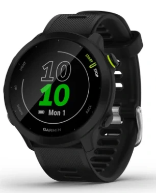
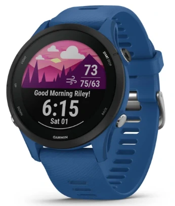
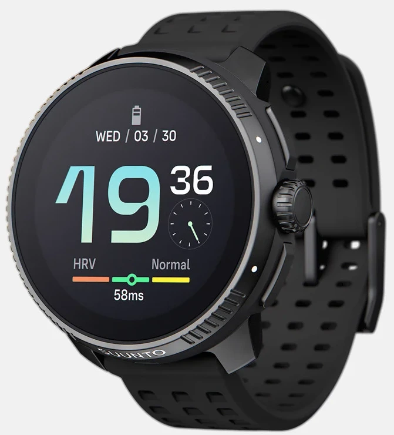
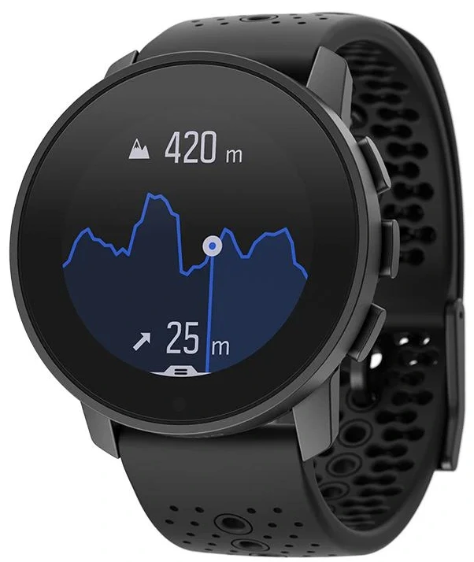
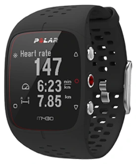
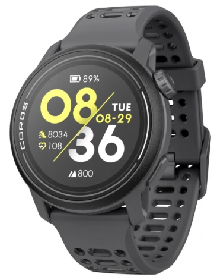

🛡️ Recomendaciones reales desde 2020
⭐ Análisis imparciales por expertos
🔝 Lo probamos por ti para que elijas lo mejor
🛡️ Recomendaciones reales desde 2020
⭐ Análisis imparciales por expertos
🔝 Lo probamos por ti para que elijas lo mejor

Contenido actualizado en junio de 2025
Elegir un buen smartwatch con GPS puede marcar la diferencia entre una sesión de running cualquiera y un entrenamiento realmente optimizado. En 2025, la tecnología ha avanzado al punto de ofrecernos métricas precisas, autonomía prolongada y funciones avanzadas como seguimiento de VO2 max, mapas offline o compatibilidad total con apps deportivas. Tras analizar decenas de modelos durante pruebas en exteriores reales —tanto en ciudad como en montaña— he seleccionado los que, en mi opinión, ofrecen el mejor equilibrio entre precisión GPS, batería y facilidad de uso. Si corres con regularidad y quieres llevar tu rendimiento al siguiente nivel, esta guía es para ti.
| Imagen | Modelo | Lo mejor | A tener en cuenta | Comprar |
|---|---|---|---|---|
|  | Garmin Forerunner 55 | ✅ Fácil de usar 📡 GPS rápido 🪶 Ligero 🏃 Ideal para principiantes | ⏱ Sin métricas avanzadas 🧭 No incluye altímetro barométrico | Ver en Amazon |
|  | Garmin Forerunner 255 | 📊 Métricas completas 🔋 Gran autonomía 📡 GPS multibanda 🏃 Para corredores serios | 💰 Precio más alto 📱 Requiere cierta curva de aprendizaje | Ver en Amazon |

|
Garmin Forerunner 165 | 🖥 Pantalla espectacular 📈 Buenas métricas 🎯 Equilibrado y fácil de usar | 🔋 Autonomía algo menor que otros Garmin ⚙️ Menos funciones avanzadas | Ver en Amazon |
|  | SUUNTO Race | 🏔 Muy robusto ⚡ Preciso en montaña 🔋 Autonomía top 🔄 Ideal para trail y ultras | 📱 App menos intuitiva que Garmin 💡 Pantalla no AMOLED | Ver en Amazon |
|  | SUUNTO 9 Peak | 🪶 Muy ligero y cómodo 💎 Diseño elegante 📊 Buenas métricas básicas | ⚙️ Menús algo lentos ⛰️ Menos potente en trail que otros SUUNTO | Ver en Amazon |
|  | Polar M430 | 🧭 Fiable y preciso 💰 Muy buen precio 📉 Ideal para corredores básicos | 📺 Pantalla básica 🧓 Diseño algo anticuado | Ver en Amazon |
|  | COROS Pace 3 | 🛰 GPS perfecto 💪 Muy completo 💸 Relación calidad-precio insuperable | 📦 Ecosistema menos conocido que Garmin o Polar | Ver en Amazon |
Lo mejor: ✅ Fácil de usar 📡 GPS rápido 🪶 Ligero 🏃 Ideal para principiantes
A tener en cuenta: ⏱ Sin métricas avanzadas 🧭 No incluye altímetro barométrico
Lo mejor: 📊 Métricas completas 🔋 Gran autonomía 📡 GPS multibanda 🏃 Para corredores serios
A tener en cuenta: 💰 Precio más alto 📱 Requiere cierta curva de aprendizaje
Lo mejor: 🖥 Pantalla espectacular 📈 Buenas métricas 🎯 Equilibrado y fácil de usar
A tener en cuenta: 🔋 Autonomía algo menor que otros Garmin ⚙️ Menos funciones avanzadas
Lo mejor: 🏔 Muy robusto ⚡ Preciso en montaña 🔋 Autonomía top 🔄 Ideal para trail y ultras
A tener en cuenta: 📱 App menos intuitiva que Garmin 💡 Pantalla no AMOLED
Lo mejor: 🪶 Muy ligero y cómodo 💎 Diseño elegante 📊 Buenas métricas básicas
A tener en cuenta: ⚙️ Menús algo lentos ⛰️ Menos potente en trail que otros SUUNTO
Lo mejor: 🧭 Fiable y preciso 💰 Muy buen precio 📉 Ideal para corredores básicos
A tener en cuenta: 📺 Pantalla básica 🧓 Diseño algo anticuado
Lo mejor: 🛰 GPS perfecto 💪 Muy completo 💸 Relación calidad-precio insuperable
A tener en cuenta: 📦 Ecosistema menos conocido que Garmin o Polar
Un reloj GPS para correr es mucho más que un simple cronómetro. Estos smartwatches están diseñados para registrar tu actividad con precisión, mostrarte métricas de ritmo, distancia, frecuencia cardíaca e incluso recuperación. Si sales a correr con frecuencia, tener un dispositivo que mida correctamente tus entrenamientos y te ayude a mejorar marca la diferencia.
Desde modelos simples hasta auténticas estaciones de análisis deportivo en la muñeca, hoy existen opciones para todos los niveles.
Un buen reloj GPS te permite entender cómo corres y cómo puedes mejorar. Estas son algunas de las razones por las que merece la pena:
📍 Precisión GPS: mide tu distancia y ritmo real sin depender del móvil.
❤️ Monitoriza tu esfuerzo: controla tu pulso, zonas de entrenamiento y recuperación.
📊 Analiza tus progresos: detecta mejoras, identifica sobreentrenamiento y ajusta tus rutinas.
🧭 Entrena con seguridad: con navegación, alertas por vibración y seguimiento en directo.
🔋 Autonomía real: entrena días enteros sin preocuparte por la batería.
⭐ Valoración del experto: 4/5
El Garmin Forerunner 55 es el reloj ideal para quienes se inician en el running y buscan fiabilidad sin complicaciones. Durante mis entrenamientos urbanos y alguna tirada larga, me convenció por su rapidez de conexión al GPS y su comodidad. No tiene métricas avanzadas, pero cumple con nota en lo esencial. Su interfaz es clara, y la batería aguanta perfectamente varias sesiones por semana. Un modelo perfecto para empezar sin renunciar a calidad.
⭐ Valoración del experto: 5/5
Probé el Forerunner 255 mientras preparaba una media maratón y fue como tener un entrenador en la muñeca. El GPS multibanda clava los recorridos, incluso en zonas difíciles, y las métricas de recuperación y carga de entrenamiento me ayudaron a ajustar las sesiones. La autonomía es sobresaliente y la experiencia general, redonda. Un modelo versátil y potente para corredores comprometidos.
⭐ Valoración del experto: 4/5
Este reloj destaca por su pantalla AMOLED, que se ve increíble tanto en interior como a pleno sol. Lo estuve usando en sesiones mixtas de ciudad y montaña, y el GPS se mantuvo estable. Tiene lo justo y necesario para corredores que quieren algo más que lo básico pero sin irse a modelos premium. La navegación por menús es muy fluida gracias a la pantalla táctil.
⭐ Valoración del experto: 4/5
El SUUNTO Race está claramente orientado a deportistas que hacen entrenamientos largos y variados. Lo llevé en una ruta de montaña de 20 km con bastante desnivel y el GPS clavó cada tramo. Las métricas de altitud y esfuerzo son muy precisas, y la batería aguantó sin problema. Eso sí, la interfaz es algo menos intuitiva que en Garmin, pero si estás acostumbrado al ecosistema Suunto, te encantará.
⭐ Valoración del experto: 4/5
El SUUNTO 9 Peak combina estética y resistencia como pocos. Lo llevé durante una semana completa y aún me sobraba batería. Es muy fino y ligero, pero aguanta entrenamientos duros con solvencia. Ideal si haces tanto trail como deporte urbano y no quieres ir cambiando de reloj.
⭐ Valoración del experto: 3/5
El Polar M430 ya lleva años en el mercado, pero sigue siendo una opción sólida para quienes no necesitan florituras. Lo he usado en sesiones básicas de running y su GPS y sensor óptico cumplen con nota. La pantalla no es la más moderna, pero es muy legible. Lo mejor, sin duda, es su fiabilidad y sencillez. Perfecto si solo quieres salir a correr y registrar bien tus datos sin pagar de más.
⭐ Valoración del experto: 5/5
El COROS Pace 3 es uno de los relojes más sorprendentes del último año. Lo usé en pista y en trail, y la precisión de su GPS multibanda es sencillamente increíble. Es muy ligero, intuitivo y con una batería que aguanta lo que le eches. Además, su app es de las más claras y completas del mercado. Por el precio que tiene, es una auténtica joya.
Después de probar estos 7 smartwatches durante semanas de entrenamiento real —en ciudad, pista y montaña— te puedo decir que no hay uno único que sirva para todos. Cada corredor tiene necesidades diferentes. Estas son mis recomendaciones personales según tu perfil:
El Garmin Forerunner 55 es el que recomiendo si estás dando tus primeros pasos. Tiene todo lo necesario para salir a correr con garantías: GPS rápido, autonomía real y sugerencias de entrenamiento. Lo mejor es lo intuitivo que resulta, incluso si nunca has usado uno. Es el típico reloj que te ayuda a coger el hábito sin agobiarte con datos técnicos.
⌚ Garmin Forerunner 55 en AmazonMi favorito en relación calidad-precio es el COROS Pace 3. Su GPS multibanda es de lo mejor que he probado, la batería dura días y la app es muy clara. Además, puedes entrenar por potencia directamente desde el reloj, sin sensores externos. Ligero, cómodo y muy completo para su precio.
⌚ COROS Pace 3 en AmazonEl Garmin Forerunner 255 es una auténtica central de datos en tu muñeca. HRV, VO2Max, recuperación, carga aguda… lo tiene todo. Lo he usado para entrenamientos estructurados, carreras y trail, y siempre ha sido fiable. Si te tomas en serio el running y quieres progresar, este es el que más recomendaría.
⌚ Garmin Forerunner 255 en AmazonDepende de tu nivel. El Garmin Forerunner 255 es ideal si entrenas en serio, mientras que el Garmin Forerunner 55 va perfecto si estás empezando.
⌚ Garmin Forerunner 55 en Amazon ⌚ Garmin Forerunner 255 en AmazonEl COROS Pace 3 y el Garmin Forerunner 255 destacan por su GPS multibanda, ideal para zonas urbanas, trail o recorridos complicados.
⌚ Garmin Forerunner 255 en Amazon ⌚ COROS Pace 3 en AmazonEl SUUNTO Race es perfecto para montaña, con altímetro barométrico y batería para ultras. También el Garmin Forerunner 255 funciona muy bien fuera del asfalto.
⌚ Garmin Forerunner 255 en Amazon ⌚ SUUNTO Race en AmazonEl Garmin Forerunner 165 tiene una pantalla AMOLED brillante y muy fácil de leer bajo el sol, perfecta si valoras la visibilidad.
⌚ Garmin Forerunner 165 en AmazonModelos como el Garmin Forerunner 165 o el Polar M430 son compactos, ligeros y cómodos para uso diario y entrenamientos.
⌚ Garmin Forerunner 165 en Amazon ⌚ Polar M430 en AmazonEl SUUNTO Race llega hasta 40 h, seguido del COROS Pace 3 con unas 38 h en modo GPS. Ambos son muy recomendables para largas distancias.
⌚ SUUNTO Race en Amazon ⌚ COROS Pace 3 en AmazonEl Garmin Forerunner 255 te da métricas como VO2Max, carga aguda, recuperación, HRV y más. Muy útil para corredores que entrenan con planificación.
⌚ Garmin Forerunner 255 en AmazonEl COROS Pace 3 es el que más sorprende por lo que ofrece: GPS multibanda, potencia de carrera y autonomía brutal por un precio ajustado.
⌚ COROS Pace 3 en AmazonEl Garmin Forerunner 55 es simple, fiable y fácil de usar. No necesitas conocimientos previos para sacarle partido desde el primer día.
⌚ Garmin Forerunner 55 en AmazonGarmin Connect es muy completa y estable. COROS sorprende por lo bien organizada que está, y Polar Flow es sencilla pero útil. Todas permiten análisis, seguimiento y exportación a Strava.
Sí. Todos los relojes de esta guía son compatibles con Strava y otras apps deportivas. Algunos, como el Garmin Forerunner 255 o el COROS Pace 3, permiten exportaciones automáticas tras cada entreno.
⌚ Garmin Forerunner 255 en Amazon ⌚ COROS Pace 3 en AmazonSí. El COROS Pace 3 calcula la potencia desde la muñeca. Es una función avanzada que ayuda a controlar el esfuerzo real sin accesorios extra.
⌚ COROS Pace 3 en Amazon